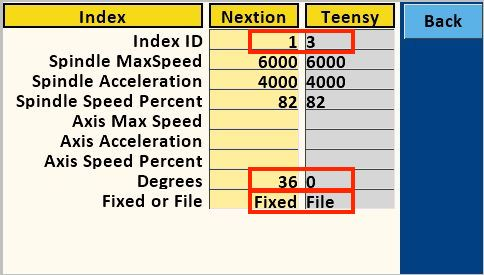

Common issues are noted below, along with recommended actions to take.
Check that the amount to be indexed is set properly into the Teensy. Tap the button and ensure the Nextion and Teensy values are the same.
In the example below, you can see on the left the screen that the user is trying to use a fixed setting of 36° per index, and saving that value in index memory #1. When the button was tapped, it shows the EEPROM settings shown in the screen sample to the right.
|
|
 |
Notice how the Index ID (the memory #) is different, as are the degrees, and even that it is running Fixed (vs. File). Any of these 3 would make it not run correctly.
This is quite common when using a memory # / Index ID which you've not used before.
To fix it, for each setting, select another option, then re-select the one you want. So, tap the Back button on the EEPROM screen to return to the screen on the left. In the case noted above, the user needs to,
Don't assume this fixes everything. Check the EEPROM settings again to be sure.
First, let me review the two pieces of this puzzle.
When the system is initially loaded, not all values are setup in the Teensy. This can happen for a myriad of reasons, but one of the classic ones is that your INI file is not setup correctly. Or it could simply be that the value was just hosed up.
In any regard, if you try to use a function which depends on those settings, it won't work correctly. Checking the EEPROM settings is a good first practice for whenever things don't work seem correctly.